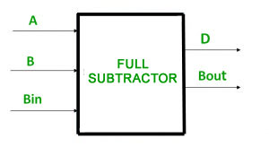
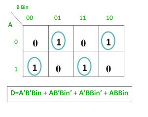
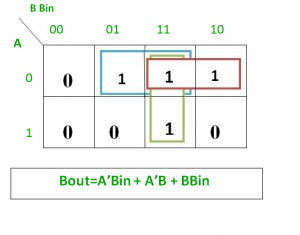
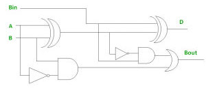
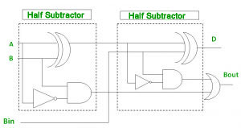

完全减法器是一个组合电路 ，它执行两位的减法，一个是减数，另一个是减数，考虑借用前一个相邻的较低的减数位。 该电路有三个输入和两个输出 。 三个输入A，B和Bin分别表示minuend，subtrahend和previous借位。 两个输出D和Bout分别代表差值和输出借位。

真相表 -

从上表中我们可以绘制K-Map，如“差异”和“借用”所示。


差异的逻辑表达式 -
D = A'B'Bin + A'BBin' + AB'Bin' + ABBin = Bin(A'B' + AB) + Bin'(AB' + A'B) = Bin( A XNOR B) + Bin'(A XOR B) = Bin (A XOR B)' + Bin'(A XOR B) = Bin XOR (A XOR B) = (A XOR B) XOR Bin
借用的逻辑表达式 -
Bout = A'B'Bin + A'BBin' + A'BBin + ABBin = A'B'Bin +A'BBin' + A'BBin + A'BBin + A'BBin + ABBin = A'Bin(B + B') + A'B(Bin + Bin') + BBin(A + A') = A'Bin + A'B + BBin OR Bout = A'B'Bin + A'BBin' + A'BBin + ABBin = Bin(AB + A'B') + A'B(Bin + Bin') = Bin( A XNOR B) + A'B = Bin (A XOR B)' + A'B
全减法器的逻辑电路 -

使用半减法器实施全减法器 -
实现完全减法器需要2个半减法器和一个OR门。

参考 - 完全减法者 - 维基百科